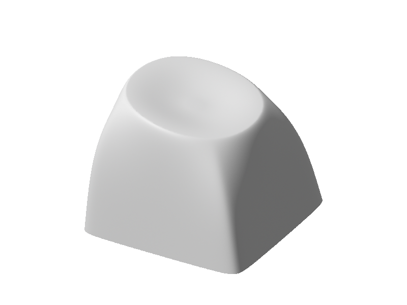
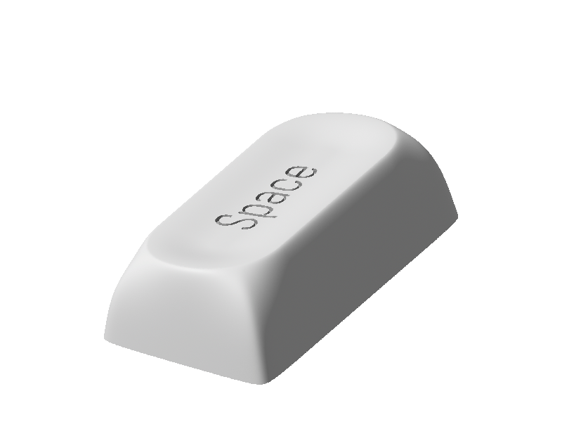
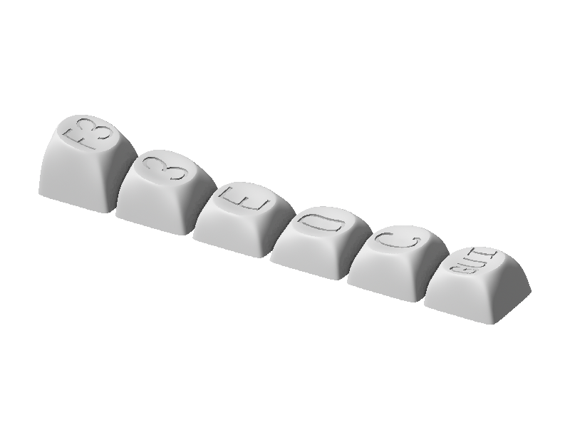

mx
Drafted with AI, not yet reviewed
sdf-native the sculpt is a field in closed form, slice by slice, its shell an offset of it
A sculpted MX keycap: a
squircle base easing into a rounder, tilted pad with a dish, a 1 mm shell,
a cross stem with ribs to the walls, posts that count the row, and an
optional homing bump and 2u stretch. The shape is in keycap.rhai;
this file picks a key, or a column of them, and their legends.
The history, as the four files tell it:
- v1: one loft of point layers from the base squircle (0.99) up to the pad (0.9), the pad tilted about X per row; a squashed sphere cut the dish; the inside was the body scaled down, which keeps 1 mm only at the base: the wall thins as it rises, and the top is 1 to 2 mm.
- v2: the side’s easing turned to an arc sine, whose infinite slope at the top rounds the shoulder; the dish became a loft of its own, from the pad’s outline down to a small circle; slices every 0.2 mm.
- v3: the dish joined the body’s loft, a second section down to a rounder squircle (0.5); the pad’s rim rose at the corners; the bump became flatter, an ellipsoid.
- v4: the rim flat again and the pad itself the round 0.5 squircle; the tilt moved to Y, the offsets to X; the inside an explicit inner loft, ending in a flat ceiling 1 mm under the dish’s middle, instead of a scaled copy; and row markers, a thumb row, 2u caps with stabiliser stems and an optional solid stem block.
What changes in the port, on purpose:
- The shell is
shell(1)of the outer field: 1 mm square to the surface, ceiling included, which follows the dish; under 0.1 mm thinner below the base’s tight corners and the shoulder. v4’s hand-made inner surface leaves 1.0 to 1.3 mm in the walls and 1 to 2 under the dish. - Surfaces are smooth: no
$fn, so the stem is round rather than a 24-gon, and the shoulder is a curve rather than v4’s first facet. - Everything else follows v4 to a few hundredths of a millimetre; the cross is exact.
How OpenSCAD’s ways map, in keycap.rhai:
- v4’s polyhedron of point layers becomes the rule behind them: which
slice a point lies in, and that slice’s outline (
outer). There is no resolution to pick; the mesh appears only at export. - Its second, inner polyhedron becomes
shell(o.wall), which needs the field to be a distance: every piece divides by its own slope, so the field stays near Lipschitz 1 where the wall leans or the dish rises. - Scaling the body for an inside, as v1 to v3 did, is no offset: the
wall thins wherever it leans. On a field, only
offsetandshellmeasure square to the surface. - The 2u key’s halves and the extruded projection between them are one
remap,
elongate. - intersection() with the body, which clips the stems and ribs, is max(): as cheap as any other combination.
- Compared with the original: the outside within 0.045 mm; the shell is thinner by design, 13% lighter.



Files
Source
// A sculpted MX keycap, ported from `src/keycaps/mx_v4.scad`: a // squircle base easing into a rounder, tilted pad with a dish, a 1 mm shell, // a cross stem with ribs to the walls, posts that count the row, and an // optional homing bump and 2u stretch. The shape is in `keycap.rhai`; // this file picks a key, or a column of them, and their legends. // // The history, as the four files tell it: // // - v1: one loft of point layers from the base squircle (0.99) up to the // pad (0.9), the pad tilted about X per row; a squashed sphere cut the // dish; the inside was the body scaled down, which keeps 1 mm only at // the base: the wall thins as it rises, and the top is 1 to 2 mm. // - v2: the side's easing turned to an arc sine, whose infinite slope at // the top rounds the shoulder; the dish became a loft of its own, from // the pad's outline down to a small circle; slices every 0.2 mm. // - v3: the dish joined the body's loft, a second section down to a // rounder squircle (0.5); the pad's rim rose at the corners; the bump // became flatter, an ellipsoid. // - v4: the rim flat again and the pad itself the round 0.5 squircle; // the tilt moved to Y, the offsets to X; the inside an explicit inner // loft, ending in a flat ceiling 1 mm under the dish's middle, instead // of a scaled copy; and row markers, a thumb row, 2u caps with // stabiliser stems and an optional solid stem block. // // What changes in the port, on purpose: // // - The shell is `shell(1)` of the outer field: 1 mm square to the // surface, ceiling included, which follows the dish; under 0.1 mm // thinner below the base's tight corners and the shoulder. v4's // hand-made inner surface leaves 1.0 to 1.3 mm in the walls and 1 to 2 // under the dish. // - Surfaces are smooth: no `$fn`, so the stem is round rather than a // 24-gon, and the shoulder is a curve rather than v4's first facet. // - Everything else follows v4 to a few hundredths of a millimetre; the // cross is exact. // // How OpenSCAD's ways map, in `keycap.rhai`: // // - v4's polyhedron of point layers becomes the rule behind them: which // slice a point lies in, and that slice's outline (`outer`). There is // no resolution to pick; the mesh appears only at export. // - Its second, inner polyhedron becomes `shell(o.wall)`, which needs the // field to be a distance: every piece divides by its own slope, so the // field stays near Lipschitz 1 where the wall leans or the dish rises. // - Scaling the body for an inside, as v1 to v3 did, is no offset: the // wall thins wherever it leans. On a field, only `offset` and `shell` // measure square to the surface. // - The 2u key's halves and the extruded projection between them are one // remap, `elongate`. // - intersection() with the body, which clips the stems and ribs, is // max(): as cheap as any other combination. // idiom sdf-native: the sculpt is a field in closed form, slice by slice, its shell an offset of it // The 2u is the bottom row's, as the Preonic's space bar; the column's // legends are the Preonic's fourth column, with F3 on the row it lacks. // view 1u: // view 2u: WIDTH = 2, ROW = 6, LEGENDS = ["Space"] // view column: COLUMN = true, LEGENDS = ["F3", "3", "E", "D", "C", "GUI"] import "keycap" as keycap; // --- Key --- const ROW = 1; // 1 top, 4 home, 6 bottom, 7 thumb const WIDTH = 1; // in u: 1, or 2, stretched along Y, with stabiliser stems const DOT = false; // the homing bump const REINFORCED = false; // a block round the cross, not for box switches const COLUMN = false; // a cap per row, 1 to 6, instead of ROW's alone const LEGENDS = []; // engraved in the dishes, the first cap's first if WIDTH != 1 && WIDTH != 2 { throw `WIDTH must be 1 or 2, got ${WIDTH}`; } // --- Cap --- // The map of options is the whole design: any of keycap::MX's keys can be // set here, `#{row: row, wall: 1.2}` for a thicker shell, `pad: 12.0` for // a smaller top. Change one, then step it with C-c C-n and C-c C-p. // // The column runs along X, towards the typist, on the MX grid: seen from // the side, the rows' heights and tilts make the sculpt's profile. The // thumb row's cap sits on no column, so it is left out. // // v4's display_section is the preview's 2D views: d, then 1 or 3 to // slice across Y or X through the stem, and [ and ] to move the slice. let rows = if COLUMN { [1, 2, 3, 4, 5, 6] } else { [ROW] }; let caps = []; for i in 0..rows.len() { let o = keycap::options(#{row: rows[i], dot: DOT, double: WIDTH == 2, reinforced: REINFORCED}); let cap = if i < LEGENDS.len() { keycap::caps([LEGENDS[i]], keycap::FONT, o) } else { keycap::keycap(o) }; caps.push(cap.move([keycap::PITCH * i, 0.0, 0.0])); } let long = if WIDTH == 2 { keycap::MX.base + keycap::MX.gap } else { 0.0 }; let column = keycap::PITCH * (rows.len() - 1); bounds([-10.0, -10.0 - long * 0.5, -0.5], [10.0 + column, 10.0 + long * 0.5, 14.5]); resolution(20); draw(union(caps));